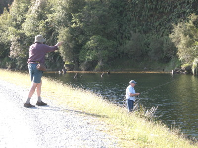
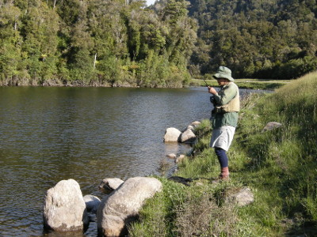
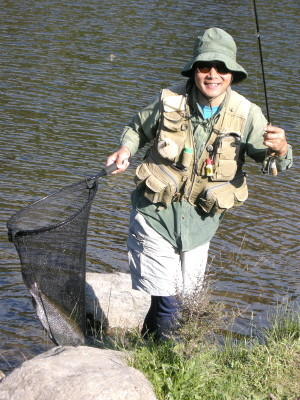
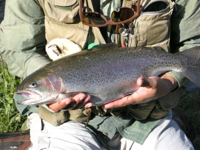
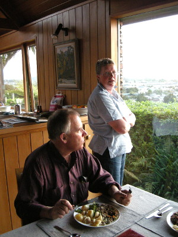

釣行日誌 ＮＺ編 「翡翠、黄金、そして銀塊」
ウェストランドのレインボー
2010/12/02(THU)-3
その小さな湖での釣りがいよいよ始まった。20分ほど、のどかな心持ちでアタリを待ってみたが、何も起こらない。水の透明度は高いので、小さなニンフも水面上のドライフライも、鱒からは良く見えるはずであるが......
『こりゃぁ、シンキングラインに替えて黒いウーリーバガーでも引っ張った方が良いかなぁ....』
などと、心中で逡巡が始まる。と、水面のハンピーがフッと消えた。
「そら来たっ！」
ロッドを高く掲げて合わせると、ギュンという手応えがあり、水中の重量感が伝わってくる。
「ストライク！！」
会心の叫び声とともにファイトが始まる。左奥の方へ突進した魚に引かれ、水面から出ているフライラインが走り出す。最初の逸走をドラグで止めると、鱒は体を捻転し始めたようで、ぐねんぐねんという手応えがロッドから伝わる。次の瞬間、大きく曲がっていたロッドが急に軽くなり、ラインが力無く垂れ下がった。
「ガーン！外れたァ......」
落胆のつぶやきとともに寄ってきたフライを見ると、ハンピーのフックに結んだティペットがきれいに無くなっている。途中で切れたのではなく、結びが甘くてほどけてしまったらしい。
「ううむ。これはイカン。初歩的なミスだ。」
反省だけならサルでも出来る、との名言を思い出し、失敗は繰り返さないように念を入れてティペットを結び直す。今の仕掛けでアタルことは判明したので、希望は持てるとポジティブに考え、少し左側に移動してキャストし直す。ドロッパーのニンフが小さな割りに重いので、キャストがカックンカックンとなるが、気にせず放り込む。さあ来い！
ニンフが沈んで行く間、となりの様子を横目で覗うと、スピニングタックルを手にしたグレースさんが水辺に立ち、ブリントさんは見晴らしの良い砂利道から指示を出している。どうやらプラスチックフロートの先にニンフを結んだ仕掛けで攻めているらしい。

「リールを少し巻いて、ラインの弛みを巻き取って！」
などとブリントさんの的確なアドバイスが聞こえてくる。何回か反応があったようだが、合わせが難しいらしく、まだストライクには至っていないようだった。
さてさて、ということで僕も自分の釣りに集中し、フローティングラインの弛みを取りながら、水面に浮かぶインジケーター代わりのハンピーを見つめる。おそらくは回遊しているであろうレインボーがニンフを見つければ、疑いなく喰いついて来るであろうと、希望的観測で胸を一杯にしてアタリを待つ。
15分ほど待ってみたが反応が無いので、さらに左側に移動し再びキャスト。さらに15分が経過し、移動してキャスト。だんだんブリントさんたちに近づいて来た。
アタレ、アタレ......と念じながら見つめていると、水面に浮いているハンピーが、ピクンと動いたような気がした。あれっ？！と思った瞬間、スッと消し込んだ。
「それっ！」
すかさずの合わせが成功し、ロッドがギュンギュンとしなる。ラインがジリジリと引き出されるが、水面は広く障害物は無い。安心してリールファイトに持ち込む。沖の方へ突進した鱒が不意にジャンプに転じる。水面を割って太い銀白色の魚体が宙を舞う。そして二度、三度の跳躍。レインボーだ。派手なジャンプに気づいたブリントさんが近寄ってきて、僕のベストからデジカメを取り出し、その後のファイトを撮してくれた。

しばらく重い引きをこらえていると、弱ってきた鱒が水面に姿を見せた。中型クラスではあるが良く太っている。徐々に岸辺に誘導してくるが、最後の抵抗を見せてまた沖合へとラインを引き出す。ブリントさんが背後からネットを手渡してくれる。今日はグレースさんも見てくれているので気持ちが良い。数歩湖水に踏み込み、ロッドで魚の頭を右側に引っ張り、右手で差し出したネットに導く。ガバッと頭からすくい上げてギャラリーたちを振り返る。

ニッコリとしてカメラに撮してもらったものの、内心は、二人の眼前でバラさなくて良かったとヒヤヒヤものであった。

今日の獲物は良く太った体高のある45cmクラスのレインボートラウト。すかさずシメて、明日燻製にしてもらうようにブリントさんにお願いした。オークランドのジョー・ハーマン夫人へのお土産にするのだ。取り出した内蔵は、夜中にウナギが出てきてきれいにたいらげてくれるそうなので、水中へ戻しておいた。時刻は午後６時を回っていた。
１尾釣り上げてキープして、ココロモチが落ち着いたので、その後はグレースさんの釣りを見学した。プラスチック製の飛ばしウキに２メートルほどティペットを付け、その先にはニンフが結んである。時々魚信があるそうなのだが、放流されたばかりのちびっ子サーモンがつつくのか、合わせが決まらないのか、ロッドに載るまでには至ってないとのこと。スピニングだとかなり遠くまでキャストできるので、飛ばしウキに現れるアタリが見にくいのかもしれなかった。グレースさんが釣りをするのは今日で三回目らとのことだったが、上手にリールとロッドを操っている。何せガイドが良いからなぁと納得した。
しばらく粘って見たが、ネルソンからの長いバスの旅で帰ってきたグレースさんが少々お疲れ気味だったので、ここらへんで切り上げ、ホキティカに帰ることにした。ずっしりと重い今日の獲物をプラスチック袋に入れ、大事に車のトランクに収めた。
家に着くと、グレースさんが疲れをいとわず豪華な夕食をこしらえてくれた。新ジャガイモ、ブロッコリー、挽肉、デザートにはイチゴとバニラアイスクリームという贅沢な晩餐となった。

今日の湖は良い釣り場だった。ギュンギュンと走った銀塊のようなレインボーの疾走と跳躍を思い出しつつ、どれも美味しい品々を味わった。夕食が終わり、シャワーを浴びてベッドに溶け込んだのは午後１０時半であった。
釣行日誌ＮＺ編 目次へ
サイトマップ
ホームへ
お問い合わせ